Label placement
How can I rotate the axis tick labels in ggplot2 so that tick labels that are long character strings don’t overlap?
Set the angle of the text in the axis.text.x or axis.text.y components of the theme(), e.g. theme(axis.text.x = element_text(angle = 90)).
See example
In the following plot the labels on the x-axis are overlapping.
ggplot(msleep, aes(x = order, y = sleep_total)) +
geom_boxplot()
- Rotate axis labels: We can do this by components of the
theme(), specifically theaxis.text.xcomponent. Applying some vertical and horizontal justification to the labels centers them at the axis ticks. Theanglecan be set as desired within the 0 to 360 degree range, here we set it to 90 degrees.
ggplot(msleep, aes(x = order, y = sleep_total)) +
geom_boxplot() +
theme(axis.text.x = element_text(angle = 90, vjust = 0.5, hjust = 1))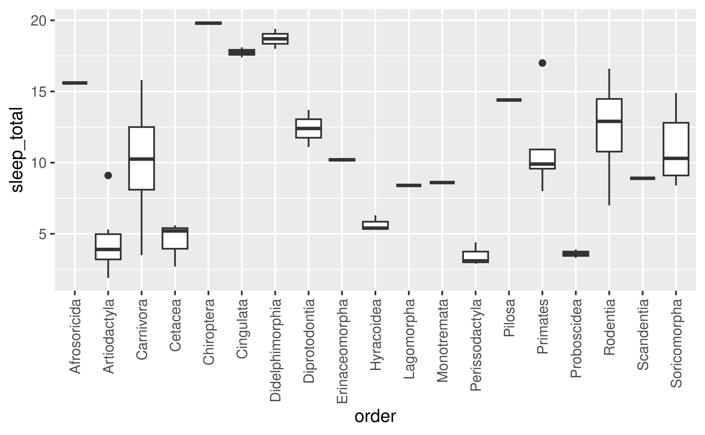
- Flip the axes: Use the y-axis for long labels.
ggplot(msleep, aes(y = order, x = sleep_total)) +
geom_boxplot()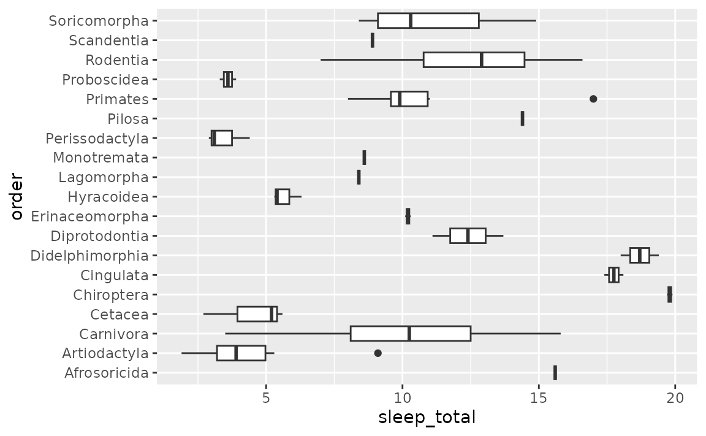
- Dodge axis labels: Add a
scale_*()layer, e.g.scale_x_continuous(),scale_y_discrete(), etc., and customise theguideargument with theguide_axis()function. In this case we want to customise the x-axis, and the variable on the x-axis is discrete, so we’ll usescale_x_continuous(). In theguideargument we use theguide_axis()and specify how many rows to dodge the labels into withn.dodge. This is likely a trial-and-error exercise, depending on the lengths of your labels and the width of your plot. In this case we’ve settled on 3 rows to render the labels.
ggplot(msleep, aes(x = order, y = sleep_total)) +
geom_boxplot() +
scale_x_discrete(guide = guide_axis(n.dodge = 3))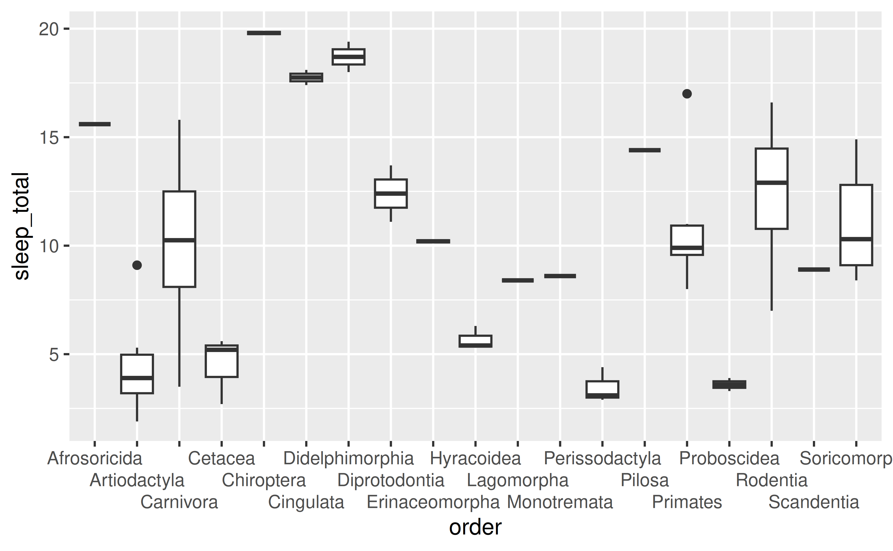
- Omit overlapping labels: Alternatively, you can set
guide_axis(check.overlap = TRUE)to omit axis labels that overlap. ggplot2 will prioritize the first, last, and middle labels. Note that this option might be more preferable for axes representing variables that have an inherent ordering that is obvious to the audience of the plot, so that it’s trivial to guess what the missing labels are. (This is not the case for the following plot.)
ggplot(msleep, aes(x = order, y = sleep_total)) +
geom_boxplot() +
scale_x_discrete(guide = guide_axis(check.overlap = TRUE))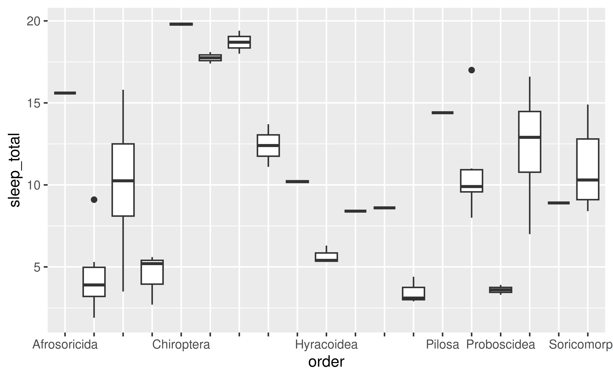
How can I remove axis labels in ggplot2?
Add a theme() layer and set relevant arguments, e.g. axis.title.x, axis.text.x, etc. to element_blank().
See example
Suppose we want to remove the axis labels entirely.
ggplot(msleep, aes(x = order, y = sleep_total)) +
geom_boxplot()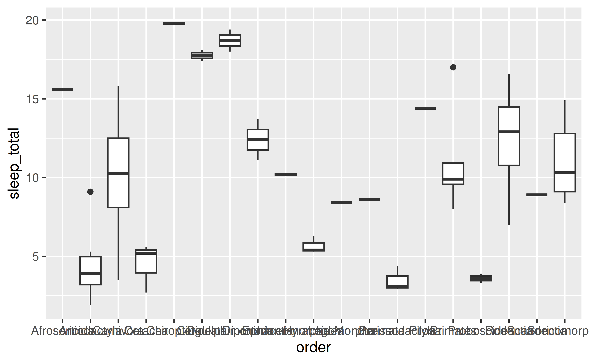
- Remove x or y axis labels: If you want to modify just one of the axes, you can do so by modifying the components of the
theme(), setting the elements you want to remove toelement_blank(). You would replacexwithyfor applying the same update to the y-axis. Note the distinction betweenaxis.titleandaxis.ticks–axis.titleis the name of the variable andaxis.textis the text accompanying each of the ticks.
ggplot(msleep, aes(x = order, y = sleep_total)) +
geom_boxplot() +
theme(
axis.title.x = element_blank(),
axis.text.x = element_blank(),
axis.ticks.x = element_blank()
)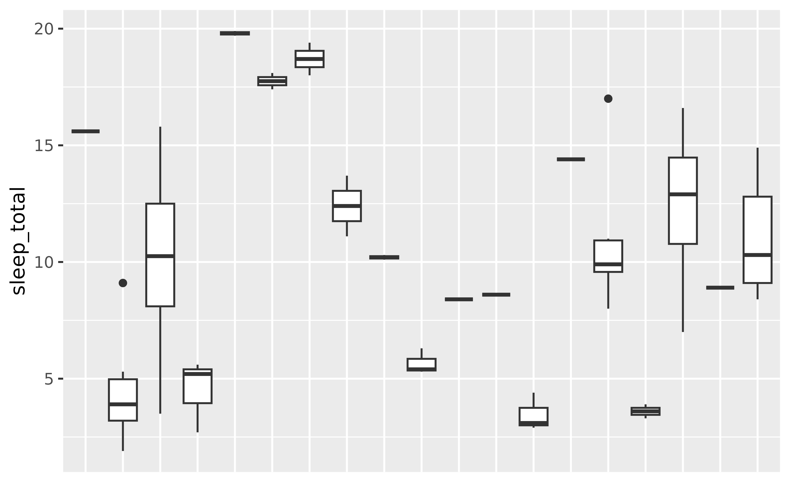
- Remove all axis labels: You can use
theme_void()to remove all theming elements. Note that this might remove more features than you like. For finer control over the theme, see below.
ggplot(msleep, aes(x = order, y = sleep_total)) +
geom_boxplot() +
theme_void()How can I add multi-row axis labels with a grouping variable?
You can do this by either by using interaction() to map the interaction of the variable you’re plotting and the grouping variable to the x or y aesthetic.
See example
Suppose you have the following data on sales for each quarter across two years.
library(tibble)
sales <- tribble(
~value, ~quarter, ~year,
10, "Q1", 2020,
15, "Q2", 2020,
15, "Q3", 2020,
20, "Q4", 2020,
10, "Q1", 2021,
25, "Q2", 2021,
30, "Q3", 2021,
30, "Q4", 2021
)You can create a line plot of these data and facet by year to group the quarters for each year together.
ggplot(sales, aes(x = quarter, y = value, group = 1)) +
geom_line() +
facet_wrap(~year)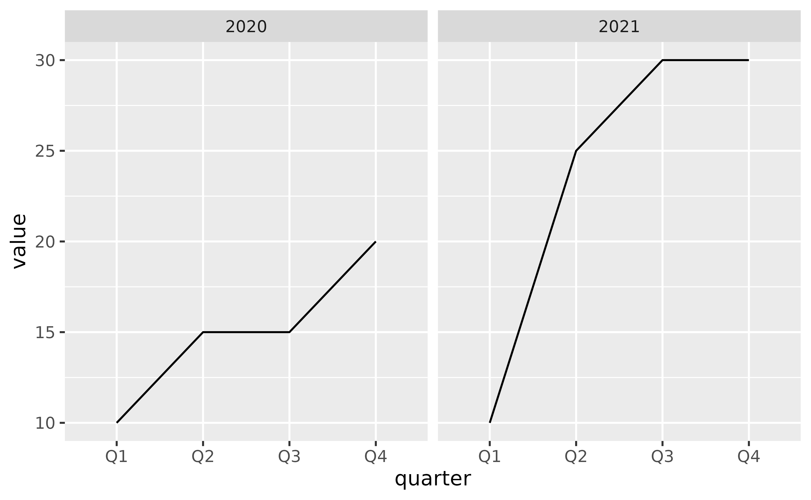
However it might be preferable to plot all points in a single plot and indicate on the x-axis that the first Q1 to Q4 are in 2020 and the second are in 2021.
To achieve this, map the interaction() of quarter and year to the x aesthetic.
ggplot(sales, aes(x = interaction(quarter, year), y = value, group = 1)) +
geom_line()
This achieves the desired result for the line, however the labeling in the x-axis is very busy and difficult to read. To clean this up (1) clip the plotting area with coord_cartesian(), (2) remove the axis labels and add a wider margin at the bottom of the plot with theme(), (3) place axis labels indicating quarters underneath the plot, and (4) underneath those labels, place annotation indicating years. Note that the x-coordinates of the year labels are manually assigned here, but if you had many more years, you might write some logic to calculate their placement.
ggplot(sales, aes(x = interaction(quarter, year), y = value, group = 1)) +
geom_line() +
coord_cartesian(ylim = c(9, 32), expand = FALSE, clip = "off") +
theme(
plot.margin = unit(c(1, 1, 3, 1), "lines"),
axis.title.x = element_blank(),
axis.text.x = element_blank()
) +
annotate(geom = "text", x = seq_len(nrow(sales)), y = 8, label = sales$quarter, size = 3) +
annotate(geom = "text", x = c(2.5, 6.5), y = 6, label = unique(sales$year), size = 4)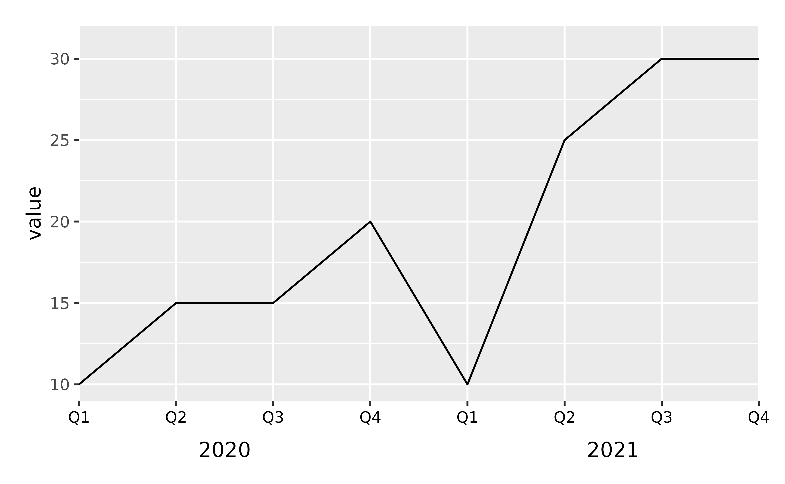
This approach works with other geoms as well. For example, you might can create a bar plot representing the same data using the following.
ggplot(sales, aes(x = interaction(quarter, year), y = value)) +
geom_col() +
coord_cartesian(ylim = c(0, 32), expand = FALSE, clip = "off") +
annotate(geom = "text", x = seq_len(nrow(sales)), y = -1, label = sales$quarter, size = 3) +
annotate(geom = "text", x = c(2.5, 6.5), y = -3, label = unique(sales$year), size = 4) +
theme(
plot.margin = unit(c(1, 1, 3, 1), "lines"),
axis.title.x = element_blank(),
axis.text.x = element_blank()
)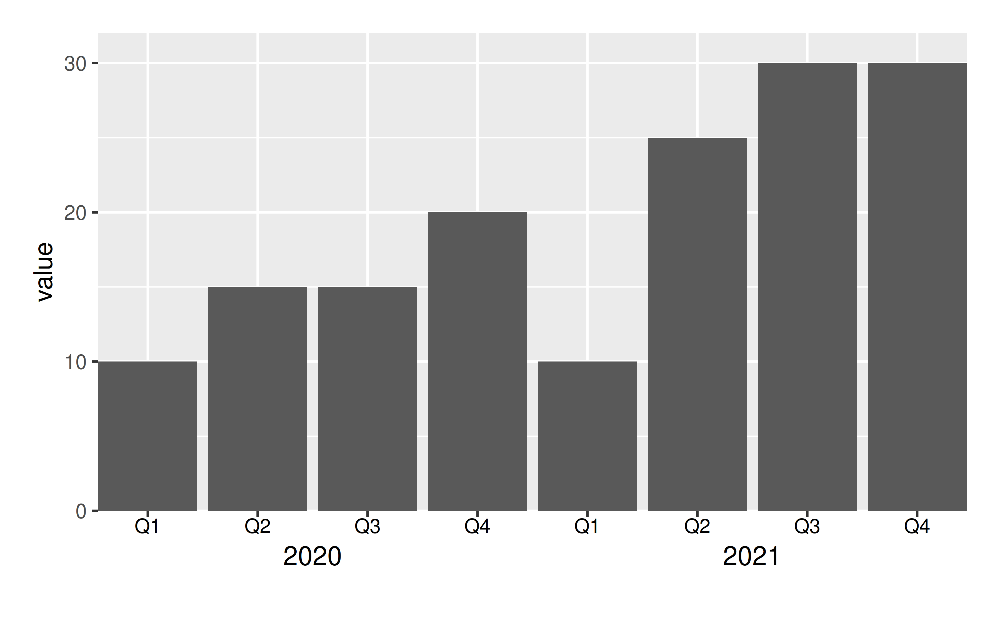
If it’s undesirable to have the bars flush against the edges of the plot, a similar result can be achieved by leveraging faceting and removing the space between facets to create the appearance of a single plot. However note that the space between the bars for 2020 Q4 and 2021 Q1 is greater than the space between the other bars.
ggplot(sales, aes(x = quarter, y = value)) +
geom_col() +
facet_wrap(~year, strip.position = "bottom") +
theme(
panel.spacing = unit(0, "lines"),
strip.background = element_blank(),
strip.placement = "outside"
) +
labs(x = NULL)
Label formatting and customization
How can I customize the text shown on the axis labels?
Add a scale_*() layer, e.g. scale_x_continuous(), scale_y_discrete(), etc., and add custom labels to the labels argument.
See example
Suppose you want to give more informative labels for the type of drive train.
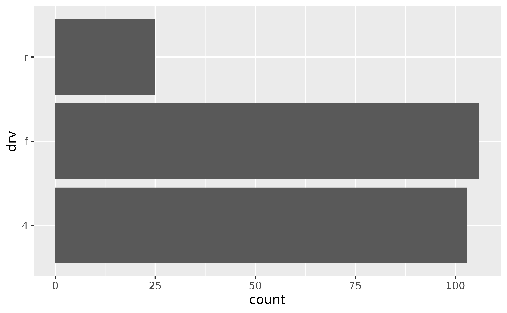
- Use the
labelsargument in the appropriatescale_*()function. You can find a list of these functions here. Type of drive train (drv) is a discrete variable on the y-axis, so we’ll adjust the labels inscale_y_discrete(). One option is to list the labels in the same order as the levels. Note that we start from the bottom and go up, just like we would if the variable was numeric/continuous.
ggplot(mpg, aes(y = drv)) +
geom_bar() +
scale_y_discrete(
labels = c("Front wheel drive", "Rear wheel drive", "Four wheel drive")
)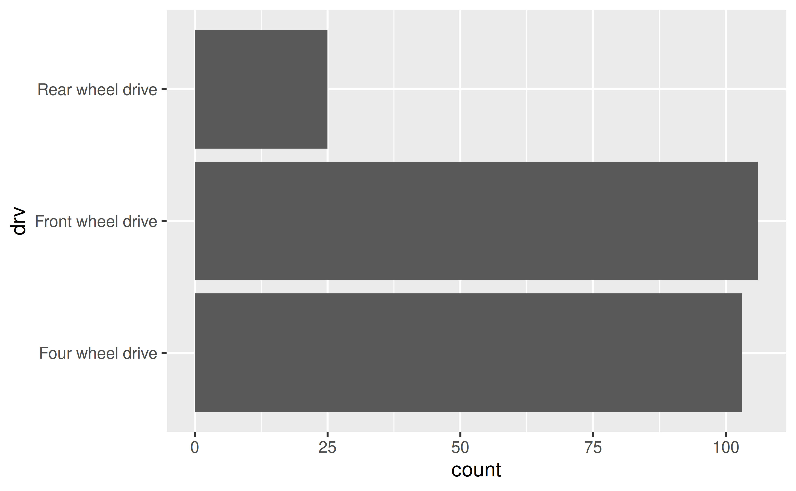
- Another approach is to use a named list. This approach not only makes the relabelling more explicit, but it also means you don’t need to worry about the order of the levels.
ggplot(mpg, aes(y = drv)) +
geom_bar() +
scale_y_discrete(
labels = c(
"f" = "Front wheel drive",
"r" = "Rear wheel drive",
"4" = "Four wheel drive"
)
)
How can I stop R from using scientific notation on axis labels?
Use scales::label_number() to force decimal display of numbers. You will first need to add a scale_*() layer (e.g. scale_x_continuous(), scale_y_discrete(), etc.) and customise the labels argument within this layer with this function.
See example
By default, large numbers on the axis labels in the following plot are shown in scientific notation.
ggplot(txhousing, aes(x = median, y = volume)) +
geom_point()
#> Warning: Removed 617 rows containing missing values (geom_point).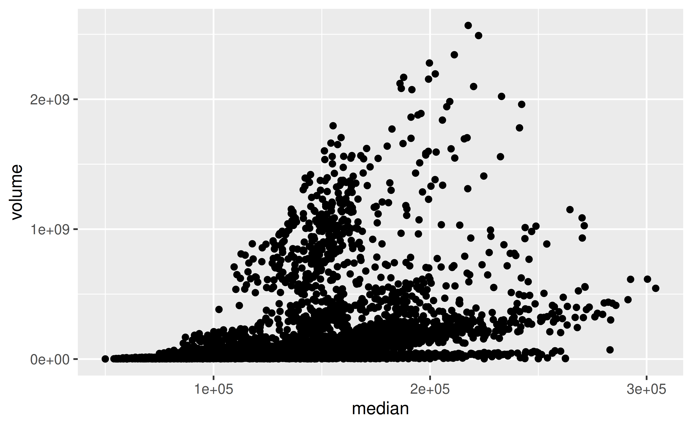
The scales package offers a large number of functions to control the formatting of axis labels and legend keys. Use scales::label_number() to force decimal display of numbers rather than using scientific notation or use scales::label_comma() to insert a comma every three digits.
library(scales)
ggplot(txhousing, aes(x = median, y = volume)) +
geom_point() +
scale_x_continuous(labels = label_number()) +
scale_y_continuous(labels = label_comma())
#> Warning: Removed 617 rows containing missing values (geom_point).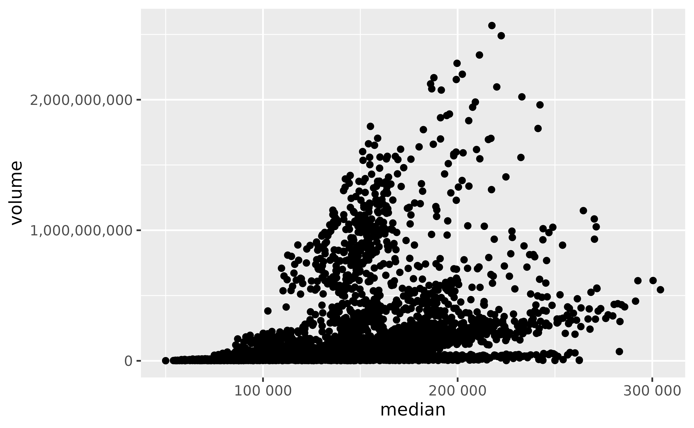
How can I change the number of decimal places on axis labels?
Set the accuracy in scales::label_number() to the desired level of decimal places, e.g. 0.1 to show 1 decimal place, 0.0001 to show 4 decimal places, etc. You will first need to add a scale_*() layer (e.g. scale_x_continuous(), scale_y_discrete(), etc.) and customise the labels argument within this layer with this function.
See example
Suppose you want to increase/decrease the number of decimal spaces shown in the axis text in the following plot.
ggplot(seals, aes(x = delta_long, y = delta_lat)) +
geom_point()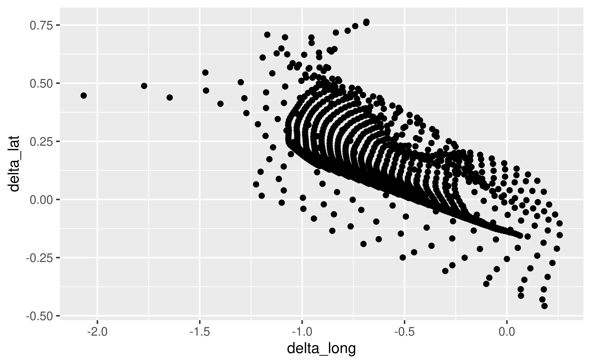
The scales package offers a large number of functions to control the formatting of axis labels and legend keys. Use scales::label_number() where the accuracy argument indicates the number to round to, e.g. 0.1 to show 1 decimal place, 0.0001 to show 4 decimal places, etc.
library(scales)
ggplot(seals, aes(x = delta_long, y = delta_lat)) +
geom_point() +
scale_x_continuous(labels = label_number(accuracy = 0.1)) +
scale_y_continuous(labels = label_number(accuracy = 0.0001))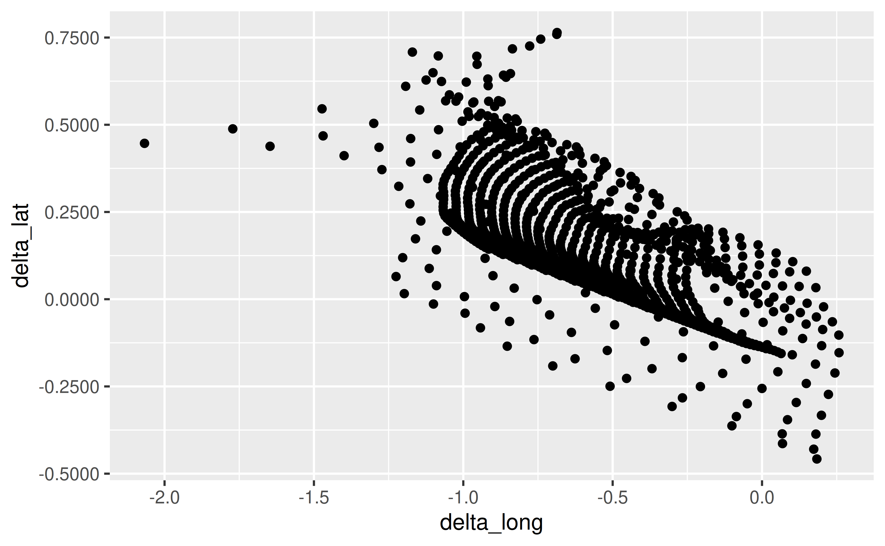
How can I add percentage symbols (%) to axis labels?
Use scales::label_percent(), which will place a % after the number, by default. You can customise where % is placed using the prefix and suffix arguments, and also scale the numbers if needed. You will first need to add a scale_*() layer (e.g. scale_x_continuous(), scale_y_discrete(), etc.) and customise the labels argument within this layer with this function.
See example
The variable on the y-axis of the following line plot (psavert) indicates the personal savings rate, which is in percentages.
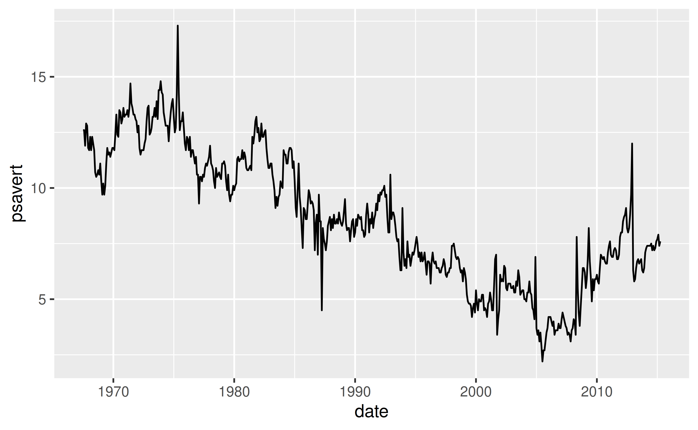
With scales::label_percent() you can add %s after the numbers shown on the axis to make the units more clear.
ggplot(economics, aes(x = date, y = psavert, group = 1)) +
geom_line() +
scale_y_continuous(labels = scales::label_percent(scale = 1, accuracy = 1))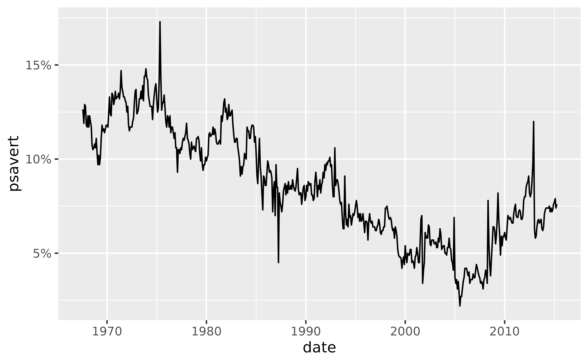
where the accuracy argument indicates the number to round to, e.g. 0.1 to show 1 decimal place, 0.0001 to show 4 decimal places, etc.
library(scales)
ggplot(seals, aes(x = delta_long, y = delta_lat)) +
geom_point() +
scale_x_continuous(labels = label_number(accuracy = 0.1)) +
scale_y_continuous(labels = label_number(accuracy = 0.0001))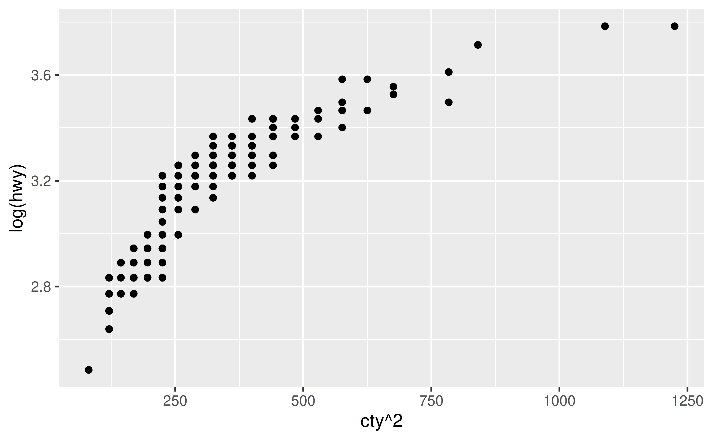
How can I add superscripts and subscripts to axis labels?
You can either use bquote() to parse mathematical expressions or use the ggtext package to write the expression using Markdown or HTML syntax.
See example
In the following plot cty is squared and hwy is log transformed.
ggplot(mpg, aes(x = cty^2, y = log(hwy))) +
geom_point()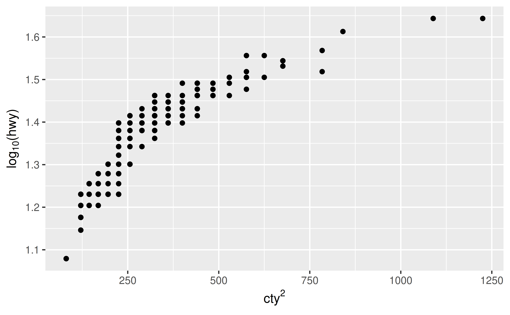
- Use
bquote()function to parse mathematical expressions.
ggplot(mpg, aes(x = cty^2, y = log(hwy, base = 10))) +
geom_point() +
labs(
x = bquote(cty^2),
y = bquote(paste(log[10], "(hwy)"))
)
- If you’re already familiar with Markdown and HTML, you might prefer using the ggtext package instead. In Markdown we can write the axis labels as
cty<sup>2</sup>andlog<sub>10</sub>(hwy)for x and y axes, respectively. Then, we tell ggplot2 to interpret the axis labels as Markdown and not as plain text by settingaxis.title.xandaxis.title.ytoggtext::element_markdown().
ggplot(mpg, aes(x = cty^2, y = log(hwy, base = 10))) +
geom_point() +
labs(
x = "cty<sup>2</sup>",
y = "log<sub>10</sub>(hwy)"
) +
theme(
axis.title.x = ggtext::element_markdown(),
axis.title.y = ggtext::element_markdown()
)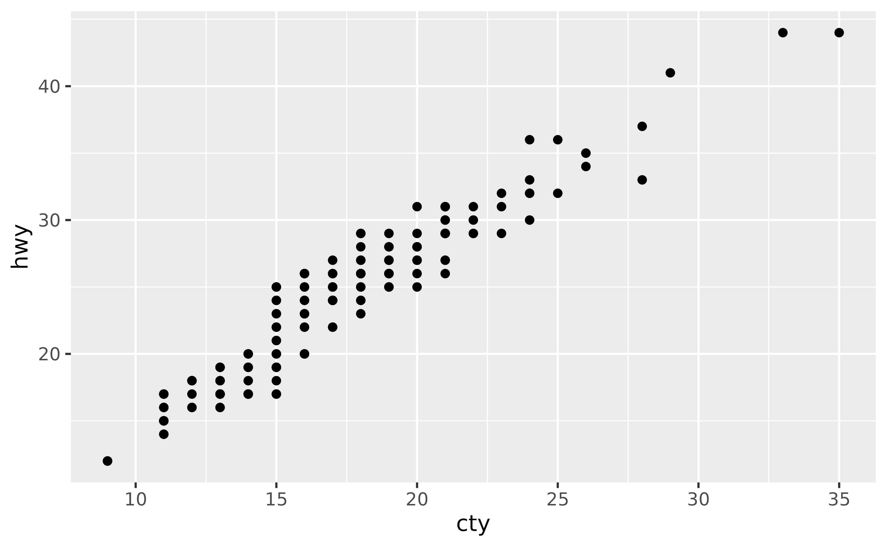
Custom breaks
How can I increase / decrease the number of axis ticks?
Customise the breaks and minor_breaks in scale_x_continuous(), scale_y_continuous(), etc.
See example
Suppose you want to customise the major and minor grid lines on both the x and the y axes of the following plot.
ggplot(mpg, aes(x = cty, y = hwy)) +
geom_point()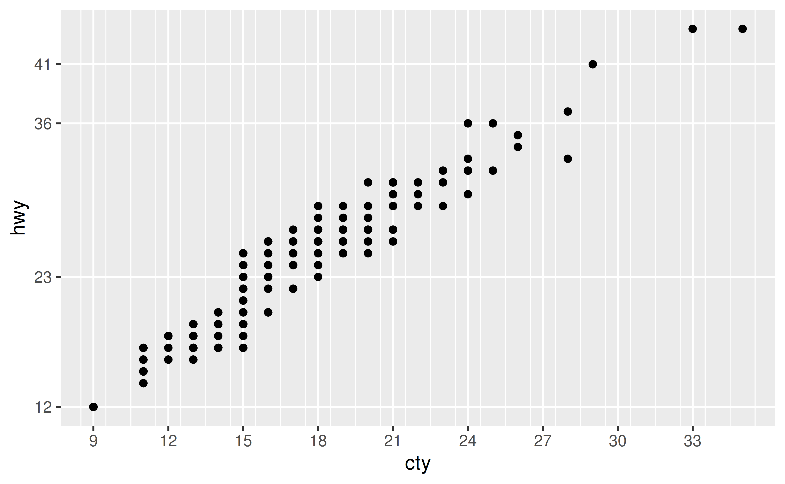
You can set breaks and minor_breaks in scale_x_continuous() and scale_y_continuous() as desired. For example, on the x-axis we have major and minor grid breaks defined as a sequence and on the y-axis we have explicitly stated where major breaks should appear as a vector (the value stated are randomly selected for illustrative purposes only, they don’t follow a best practice) and we have completely turned off minor grid lines by setting minor_breaks to NULL.
ggplot(mpg, aes(x = cty, y = hwy)) +
geom_point() +
scale_x_continuous(
breaks = seq(9, 35, 3),
minor_breaks = seq(8.5, 35.5, 1)
) +
scale_y_continuous(
breaks = c(12, 23, 36, 41),
minor_breaks = NULL
)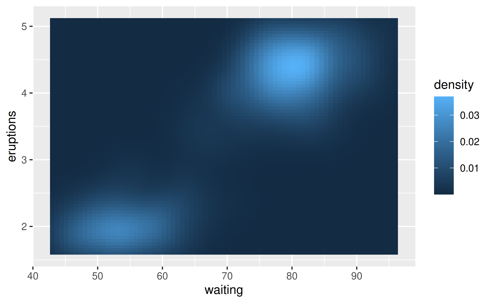
How can I control the number of major and minor grid lines shown on the plot?
Customise the breaks and minor_breaks in scale_x_continuous(), scale_y_continuous()`, etc. See How can I increase / decrease the number of axis ticks? for more detail.
See example
Note that the question was about grid lines but we answered it using breaks. This is because ggplot2 will place major grid lines at each break supplied to breaks and minor grid lines at each break supplied to minor_breaks.
How can I remove the space between the plot and the axis?
Remove the padding around the data entirely using by setting expand = c(0, 0) within the scale_x_continuous(), scale_y_discrete(), etc. layers.
See example
- Remove all padding: Suppose you want to remove the padding around the heat map so it’s flush against the axes.
ggplot(faithfuld, aes(waiting, eruptions)) +
geom_raster(aes(fill = density))
Since both x and y variables are continuous, we set expand = c(0, 0) in both scale_x_continuous() and scale_y_continuous().
ggplot(faithfuld, aes(waiting, eruptions)) +
geom_raster(aes(fill = density)) +
scale_x_continuous(expand = c(0, 0)) +
scale_y_continuous(expand = c(0, 0))
- Remove some of the padding: Suppose you want to remove the padding below the bars and the x-axis only.
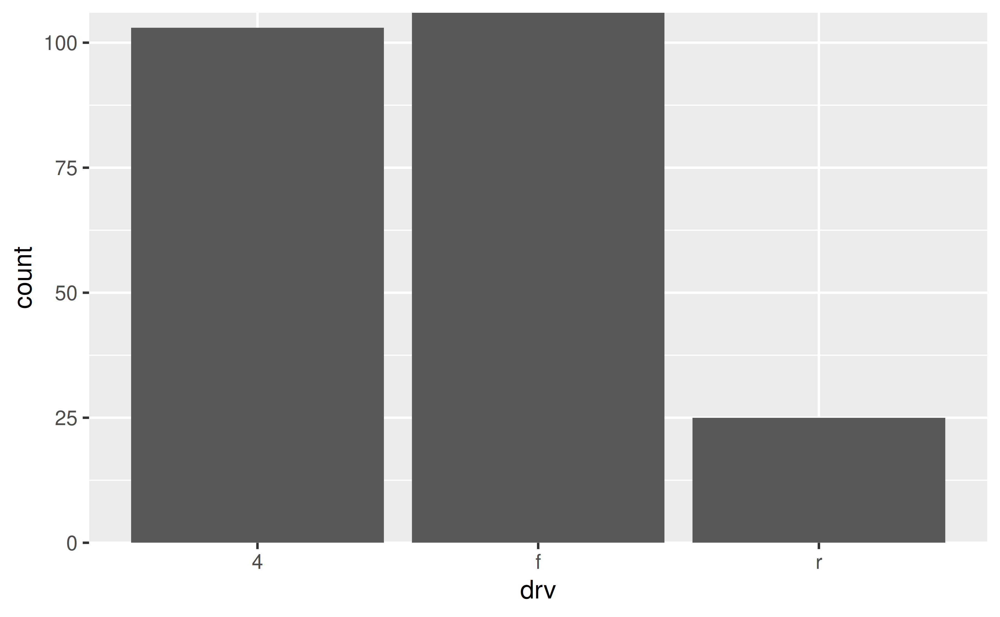
You would make this adjustment on scale_y_continuous() since that padding is in the vertical direction.
ggplot(mpg, aes(drv)) +
geom_bar() +
scale_y_continuous(expand = c(0, 0))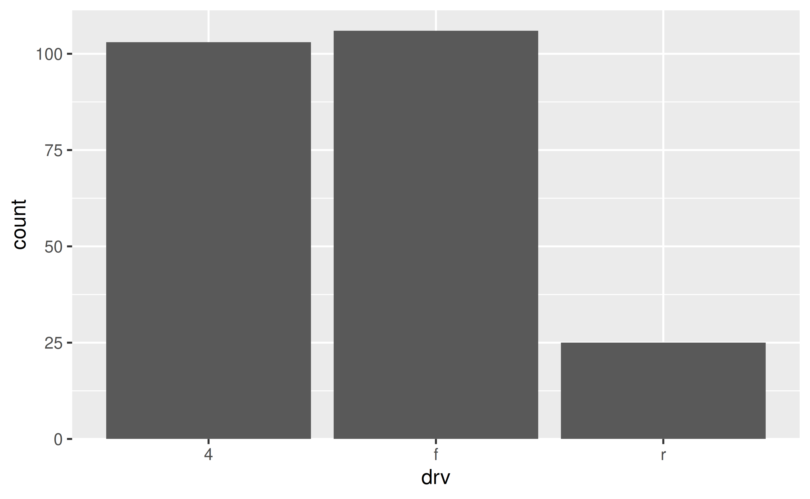
However note that this removes the padding at the bottom of the bars as well as on top. By default, ggplot2 The expands the scale by 5% on each side for continuous variables and by 0.6 units on each side for discrete variables. To keep the default expansion on top while removing it at the bottom, you can use the following. The mult argument in expansion() takes a multiplicative range expansion factors. Given a vector of length 2, the lower limit is expanded by mult[1] (in this case 0) and the upper limit is expanded by mult[2] (in this case 0.05).
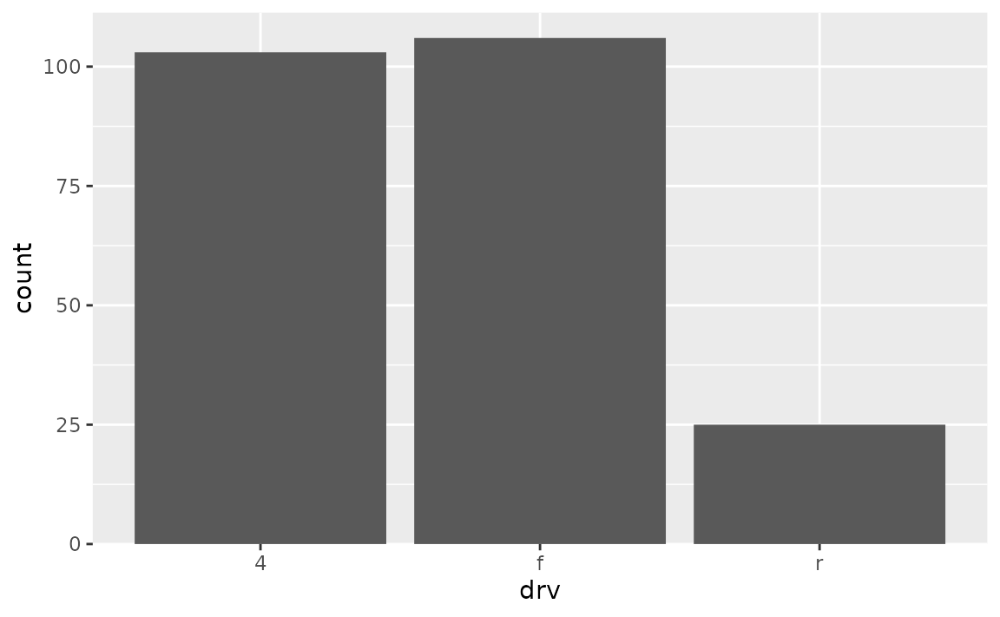